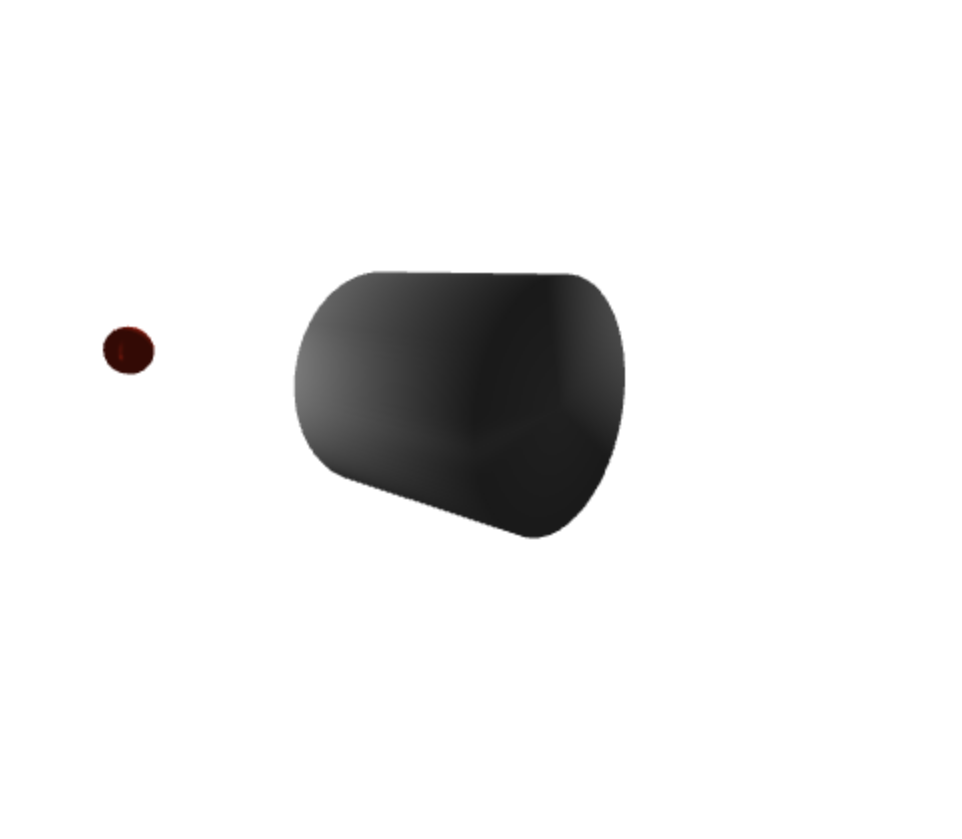

Assignment 4
Name: Gabriel Aizenman
Login ID: gaizenma
Assignment Number: 4
Date: 5/14/21
This is for hw4. To move the camera, you can use q and e for zooming in
and out along with w, a, s, d for rotations and the arrow keys for camera
movement. You can also click the space to see the camera rotate around the
object.
Finally, you can also click the projection style to switch between perspective
and orthogonal views.
Test the code!
See the Javascript!
Example Output:
